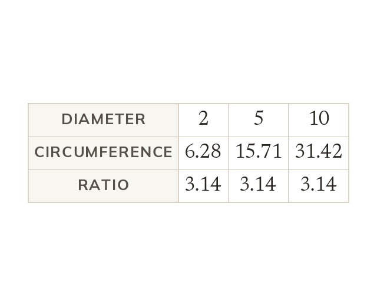

What π is
π is any circle's circumference ÷ its diameter. It is the same for every circle, however large or small.
π is the ratio of any circle's circumference to its diameter, and this ratio is the same for every circle, however large or small.